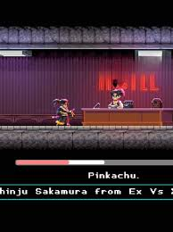

Katana Zero: Neon Archive
Historia de Katana Zero
Zero: ¿Qué sabes de Chronos?
Katana Zero es un juego de acción y plataformas neo-noir desarrollado por Askiisoft y publicado por Devolver Digital en 2019. Ambientado en un mundo distópico, sigues a Zero, un asesino con habilidades para manipular el tiempo, mientras desentrañas una narrativa oscura llena de conspiraciones, trauma y Chronos, una droga experimental que otorga habilidades sobrenaturales.
La historia se desarrolla en una ciudad post-guerra, donde Zero recibe misiones de un misterioso cliente. A través de una narrativa fragmentada, se exploran temas de culpa, redención y la moralidad de la violencia. El juego combina una estética pixel-art con una banda sonora synthwave, creando una atmósfera inmersiva que recuerda al cine noir y los thrillers psicológicos.
Personajes Principales
-
Zero: El protagonista, un asesino a sueldo con habilidades para manipular el tiempo gracias a la droga Chronos. Sufre de amnesia y traumas de guerra.
-
El Psiquiatra: Un misterioso terapeuta que administra Chronos a Zero y parece saber más sobre su pasado de lo que revela.
-
V: Un antagonista carismático y sádico, involucrado en el mundo criminal y con conexiones a la conspiración principal.
-
 La Niña: Una figura enigmática que aparece en visiones de Zero, representando inocencia perdida y trauma.
La Niña: Una figura enigmática que aparece en visiones de Zero, representando inocencia perdida y trauma. -

El Cliente: La voz anónima que asigna misiones a Zero, manipulándolo para sus propios fines.
Secretos y Easter Eggs
En Katana Zero, hay varios secretos ocultos que enriquecen la lore:
- Finales Alternos: Dependiendo de tus elecciones en diálogos y acciones, puedes desbloquear diferentes finales, incluyendo uno secreto donde se revela más sobre el origen de Chronos.
- Easter Eggs en Niveles: En algunos niveles, hay referencias a otros juegos indie, como Hotline Miami, con pósters o diálogos ocultos.
- Modo Speedrun: Completar el juego desbloquea un modo speedrun con desafíos adicionales y logros ocultos.
- Diálogos Ocultos: Interactuar repetidamente con ciertos objetos o NPCs revela lore adicional sobre la guerra y los experimentos gubernamentales.
- Chronos Overdose: En ciertas secuencias, abusar de la mecánica de tiempo puede desencadenar alucinaciones que revelan pistas sobre el pasado de Zero.